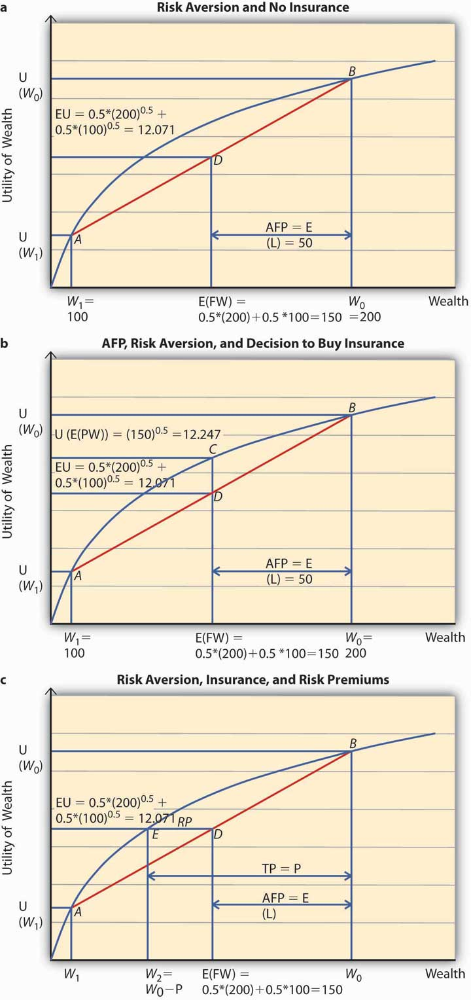

From now on, we will restrict ourselves to the E(U) theory since we can predict behavior with it. We are interested in the predictions about human behavior, rather than just a description of it.
The risk averter’s utility function (as we had seen earlier in Figure 3.2 "A Utility Function for a Risk-Averse Individual") is concave to the origin. Such a person will never play a lottery at its actuarially fair premium, that is, the expected loss in wealth to the individual. Conversely, such a person will always pay at least an actuarially fair premium to get rid of the entire risk.
Suppose Ty is a student who gets a monthly allowance of $200 (initial wealth W0) from his parents. He might lose $100 on any given day with a probability 0.5 or not lose any amount with 50 percent chance. Consequently, the expected loss (E[L]) to Ty equals 0.5($0) + 0.5($100) = $50. In other words, Ty’s expected final wealth E (FW) = 0.5($200 − $0) + 0.5($200 − $100) = W0 − E(L) = $150. The question is how much Ty would be willing to pay to hedge his expected loss of $50. We will assume that Ty’s utility function is given by —a risk averter’s utility function.
To apply the expected utility theory to answer the question above, we solve the problem in stages. In the first step, we find out Ty’s expected utility when he does not purchase insurance and show it on Figure 3.6 "Risk Aversion" (a). In the second step, we figure out if he will buy insurance at actuarially fair prices and use Figure 3.6 "Risk Aversion" (b) to show it. Finally, we compute Ty’s utility when he pays a premium P to get rid of the risk of a loss. P represents the maximum premium Ty is willing to pay. This is featured in Figure 3.6 "Risk Aversion" (c). At this premium, Ty is exactly indifferent between buying insurance or remaining uninsured. What is P?
Figure 3.6 Risk Aversion
Step 1: Expected utility, no insurance.
In case Ty does not buy insurance, he retains all the uncertainty. Thus, he will have an expected final wealth of $150 as calculated above. What is his expected utility?
The expected utility is calculated as a weighted sum of the utilities in the two states, loss and no loss. Therefore, Figure 3.6 "Risk Aversion" (a) shows the point of E(U) for Ty when he does not buy insurance. His expected wealth is given by $150 on the x-axis and expected utility by 12.071 on the y-axis. When we plot this point on the chart, it lies at D, on the chord joining the two points A and B. A and B on the utility curve correspond to the utility levels when a loss is possible (W1 = 100) and no loss (W0 = 200), respectively. In case Ty does not hedge, then his expected utility equals 12.071.
What is the actuarially fair premium for Ty? Note actuarially fair premium (AFP) equals the expected loss = $50. Thus the AFP is the distance between W0 and the E (FW) in Figure 3.6 "Risk Aversion" (a).
Step 2: Utility with insurance at AFP.
Now, suppose an insurance company offers insurance to Ty at a $50 premium (AFP). Will Ty buy it? Note that when Ty buys insurance at AFP, and he does not have a loss, his final wealth is $150 (Initial Wealth [$200] − AFP [$50]). In case he does suffer a loss, his final wealth = Initial Wealth ($200) − AFP ($50) − Loss ($100) + Indemnity ($100) = $150. Thus, after the purchase of insurance at AFP, Ty’s final wealth stays at $150 regardless of a loss. That is why Ty has purchased a certain wealth of $150, by paying an AFP of $50. His utility is now given by . This point is represented by C in Figure 3.6 "Risk Aversion" (b). Since C lies strictly above D, Ty will always purchase full insurance at AFP. The noteworthy feature for risk-averse individuals can now be succinctly stated. A risk-averse person will always hedge the risk completely at a cost that equals the expected loss. This cost is the actuarially fair premium (AFP). Alternatively, we can say that a risk-averse person always prefers certainty to uncertainty if uncertainty can be hedged away at its actuarially fair price.
However, the most interesting part is that a risk-averse individual like Ty will pay more than the AFP to get rid of the risk.
Step 3: Utility with insurance at a price greater than AFP.
In case the actual premium equals AFP (or expected loss for Ty), it implies the insurance company does not have its own costs/profits. This is an unrealistic scenario. In practice, the premiums must be higher than AFP. The question is how much higher can they be for Ty to still be interested?
To answer this question, we need to answer the question, what is the maximum premium Ty would be willing to pay? The maximum premium P is determined by the point of indifference between no insurance and insurance at price P.
If Ty bears a cost of P, his wealth stands at $200 − P. And this wealth is certain for the same reasons as in step 2. If Ty does not incur a loss, his wealth remains $200 − P. In case he does incur a loss then he gets indemnified by the insurance company. Thus, regardless of outcome his certain wealth is $200 − P.
To compute the point of indifference, we should equate the utility when Ty purchases insurance at P to the expected utility in the no-insurance case. Note E(U) in the no-insurance case in step 1 equals 12.071. After buying insurance at P, Ty’s certain utility is So we solve the equation and get P = $54.29.
Let us see the above calculation on a graph, Figure 3.6 "Risk Aversion" (c). Ty tells himself, “As long as the premium P is such that I am above the E(U) line when I do not purchase insurance, I would be willing to pay it.” So starting from the initial wealth W0, we deduct P, up to the point that the utility of final wealth equals the expected utility given by the point E(U) on the y-axis. This point is given by W2 = W0 − P.
The Total PremiumThe sum of the actuarially fair premium and the risk premium. (TP) = P comprises two parts. The AFP = the distance between initial wealth W0 and E (FW) (= E [L]), and the distance between E (FW) and W2. This distance is called the risk premium (RP, shown as the length ED in Figure 3.6 "Risk Aversion" [c]) and in Ty’s case above, it equals $54.29 − $50 = $4.29.
The premium over and above the AFP that a risk-averse person is willing to pay to get rid of the risk is called the risk premiumThe premium over and above the actuarially fair premium that a risk-averse person is willing to pay to get rid of risk.. Insurance companies are aware of this behavior of risk-averse individuals. However, in the example above, any insurance company that charges a premium greater than $54.29 will not be able to sell insurance to Ty.
Thus, we see that individuals’ risk aversion is a key component in insurance pricing. The greater the degree of risk aversion, the higher the risk premium an individual will be willing to pay. But the insurance price has to be such that the premium charged turns out to be less than or equal to the maximum premium the person is willing to pay. Otherwise, the individual will never buy full insurance.
Thus, risk aversion is a necessary condition for transfer of risks. Since insurance is one mechanism through which a risk-averse person transfers risk, risk aversion is of paramount importance to insurance demand.
The degree of risk aversion is only one aspect that affects insurance prices. Insurance prices also reflect other important components. To study them, we now turn to the role that information plays in the markets: in particular, how information and information asymmetries affect the insurance market.